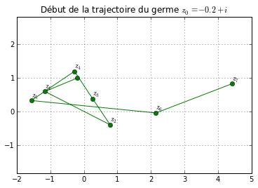
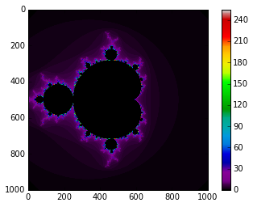

Des trinômes et des hippocampes
Contents
Ce qui est vraiment fascinant avec les maths, c'est que quand on croit qu'on a fait le tour d'une question, on peut toujours lui trouver une face par laquelle on ne l'a pas regardée. Et ça peut donner des points de vue incroyables. Je vais prendre un exemple qui peut paraître blasant : l'équation du second degré.
Dans le cours on a vu les formules permettant de résoudre l'équation du second degré à coefficients réels. Et on a généré grâce aux nombres complexes des solutions non réelles (c'est le principal intérêt des nombres complexes, et la raison historique de leur apparition).
Des germes et des trajectoires
Je vais partir d'un nombre complexe quelconque : mettons \(z_0 \in \mathbf C.\) Et je vais considérer la suite suivante \((z_n),\) dont le premier terme, est, vous vous en doutez, \(z_0\), et dont les termes suivants se calculent de proche en proche par la formule de récurrence suivante :
Vous voyez, la fonction cachée derrière cette suite est le prototype de la fonction trinôme : la fonction
(c'est juste une parabole translatée d'un facteur complexe, mais si \(z_0\) est réel, on retrouve une translation comme vue dans le billet ici).
Je commence par pythoniser la fonction \(f\) :
def f(z,z0): return z**2 + z0
Un premier exemple
Pour commencer, je prends par exemple \(z_0 = 1+i\). Voici la liste des termes de la suite jusqu'à \(z_{15}\) en partant de \(z_0 = 1+i\).
La programmation des suites récurrentes n'a en effet plus de secret pour vous, je peux calculer par la boucle suivante mes termes consécutifs (notez que comme \(f(0)=z_0\), je peux intialiser ma variable z dans le script à z=0) :
z0 = 1 + 1j N = 16 z=0 for n in range(0,N): z = f(z,z0) print 'rang',n, ":",z
rang 0 : (1+1j) rang 1 : (1+3j) rang 2 : (-7+7j) rang 3 : (1-97j) rang 4 : (-9407-193j) rang 5 : (88454401+3631103j) rang 6 : (7.81099614727e+15+6.42374081669e+14j) rang 7 : (6.05990163519e+31+1.0035162954e+31j) rang 8 : (3.5715362873e+63+1.21624200789e+63j) rang 9 : (1.12766268298e+127+8.68770493066e+126j) rang 10 : (5.16860956956e+253+1.9593601302e+254j) rang 11 : (nan+nanj) rang 12 : (nan+nanj) rang 13 : (nan+nanj) rang 14 : (nan+nanj) rang 15 : (nan+nanj)
Voilà qu'apparaissent des nan dans les termes de la suite. Explication : Ce n'est pas que Python vous dit : "nan, je veux pas calculer". En fait, si vous regardez les termes de près, vous pouvez remarquer que \(z_n\) devient vite très grand, et pour Python, un nombre trop grand (entendez : qui dépasse sa capacité de calcul) est nan : not a number.
Un peu de vocabulaire : pour cette suite, le premier terme \(z_0\) s'appelle le germe de la suite. La suite des termes consécutifs s'appelle la trajectoire ou l'orbite du germe \(z_0\).
Un deuxième exemple
Voici la trajectoire du germe \(z_0=i\) :
z0 = 1j N = 16 z=0 for n in range(0,N): z = f(z,z0) print 'rang',n, ":",z
rang 0 : 1j rang 1 : (-1+1j) rang 2 : -1j rang 3 : (-1+1j) rang 4 : -1j rang 5 : (-1+1j) rang 6 : -1j rang 7 : (-1+1j) rang 8 : -1j rang 9 : (-1+1j) rang 10 : -1j rang 11 : (-1+1j) rang 12 : -1j rang 13 : (-1+1j) rang 14 : -1j rang 15 : (-1+1j)
On constate que la trajectoire boucle sur 3 valeurs distinctes : on a une orbite périodique.
Un dernier exemple
Je vais dessiner (le début de) l'orbite d'un \(z_0\) tel que ce soit visible sur le dessin. Je reprends mon programme précédent. Je pars de \(z_0\), et dans ma boucle, je stocke les coordonnées du terme calculé de la suite pour enfin relier les points.
%matplotlib inline import matplotlib.pyplot as plt import matplotlib.path as mpath import matplotlib.pyplot as plt
fig, ax = plt.subplots() # je crée la fenêtre graphique Path = mpath.Path # j'initialise ma trajectoire z0 = -0.2+1j # c'est mon germe N = 8 # Pas trop de points z=z0 path_data=[(Path.MOVETO,(z0.real,z0.imag))] # point de départ for n in range(1,N): z = f(z,z0) # calcul du point courant sur la ligne plt.text(z.real,z.imag+0.1,r'$z_{'+str(n)+'}$') # légende path_data = path_data+[(Path.LINETO,(z.real,z.imag))] # coordonnées # Un peu de cosmétique codes, verts = zip(*path_data); path = mpath.Path(verts, codes); x, y = zip(*path.vertices); line, = ax.plot(x, y, 'go-'); plt.title(u'Début de la trajectoire du germe '+r'$z_0=-0.2+i$') ax.grid(); ax.axis('equal');
Quel âge a ce germe ?
Ces trois exemples ont montré des situations variées.
- Les termes de la suite s'éloignent indéfiniment de l'origine (ex : \(z_0=1+i\) ou le cas du germe que je viens de dessiner).
- L'orbite boucle (exemple : le cas de \(z_0=i\)) :
- (Cas contenant le cas précédent) l'orbite reste dans une région bornée : l'orbite est confinée.
En fait on peut montrer qu'il ne se passe que deux choses :
- Soit un des termes de la suite \((z_n)\) dépasse en module \(2\) : dans ce cas l'orbite s'éloigne indéfiniment de l'origine. Le permier rang à partir duquel un terme \(z_k\) de la suite vérifie \(|z_k|>2\) s'appelle l'âge ou la durée de vie du germe \(z_0\). Par exemple, le germe \(z_0\) a pour durée de vie \(1\) puisque pour cette suite, \(|z_1| =\sqrt{5}>2\) et \(|z_0|\le 2\).
- Soit on est dans le cas contraire du cas 1, et la suite reste bornée. Dans ce cas on dit le germe est éternel. Par exemple, le germe \(i\) est éternel.
Colorions les germes de même âge
Déterminer l'âge d'un germe par le calcul est difficile, mais Python est mon ami. Alors je me suis amusé
- À calculer l'âge d'un tas de points du plan complexe.
- À colorier d'une même couleur tous les germes de même âge.
- À colorier en noir les germes éternels. Évidemment, je ne peux pas vérifier par le calcul qu'un germe est éternel, mais je pose le critère arbitraire suivant : si au bout de 256 termes, aucun terme ne vérifie \(|z_k|>2\), j'ai de fortes raisons de penser que le germe est éternel. Cela me donne donc 256 âges possibles pour mes germes, et au pire, avec mes critères, je mets de l'ombre sur des germes qui devraient être coloriés.
Vous avez dit fractales ?
Eh bien figurez-vous qu'en jouant à colorier les germes, cela donne une très belle mosaïque, aussi complexe (ah ! ah !) que poétique. Regardez (je commente le programme) :
import numpy as np
x_min = -1.5 # je vais regarder les germes dans la région -1.5 < Re(z) < 1.5 x_max = 1.5 # et idem pour la partie imaginaire. Ça me donne un domaine carré y_min = -1.5 y_max = 1.5 resolution = 1000 # je maille mon domaie en subdivisant en 1000 X 1000 # j'ai donc 1 million de germes nombre_Iterations = 256 # je regarde mon orbite sur les 256 premiers termes X = np.linspace(x_min,x_max,resolution).reshape(1,resolution) # ce qui suit est là pour rendre Y = -np.linspace(-y_max,-y_min,resolution).reshape(resolution,1) # mon calcul plus rapide U = np.ones((resolution,1)) Re = np.dot(U,X) Im = np.dot(Y,U.T) Z0 = Re + 1j*Im # X,Y,Re,Im,Z0 sont des matrices conteant les germes. def f(Z,C): W = Z**2+C return W
C = Z0.reshape(resolution**2,) Z = np.zeros(np.shape(C)) A = Z # A est la future image : matrice colorée for k in range(0,nombre_Iterations): Z = f(Z,C) I,J = np.where(abs(Z) >2) # je cherche les germes de durée de vie k Z[I,J] = np.nan # je les oublie pour la suite A[I,J] = k # dans ma grille je les colorie en couleur k
A=A.reshape(resolution,resolution); plt.imshow(A,cmap='spectral'); plt.colorbar();
Sur l'image ci-dessus, le code des couleurs vous dit l'âge de chaque germe.
Le bel ensemble noir qui se distingue dans son halo de lumière est l'ensemble de Mandelbrot. C'est un ensemble fractal : il est auto-similaire, c'est-à-dire qu'à toute échelle, vous retrouvez dans l'ensemble des répliques de l'ensemble lui-même. En particulier, cela veut dire que si je vous montre une réplique de cette objet dans l'objet, vous ne pouvez pas dire à quelle échelle vous êtes en train de faire l'observation. Je vous montrerai des photos de certaines régions dans un autre billet.